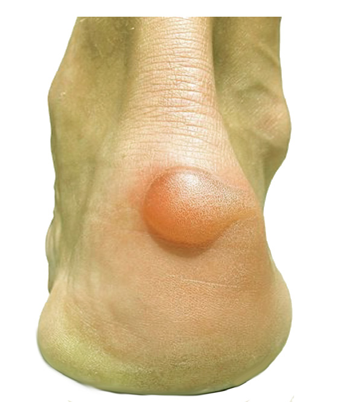

Common injuries in sports
In exercise and sporting activities, it is common to encounter circumstances which may cause injuries. Injuries that occur immediately during the event are called acute injuries while those that develop slowly from many events are called overuse injuries. For example, if you fall down and get cut by a piece of glass, the cut is considered acute injury. If you have been playing every day without getting enough rest such that your knee is uncomfortable and start swelling, that is overuse injury. Therefore, all injuries fall into these two groups, acute and overuse injuries.
There are various injuries that occur during exercises and sporting activities in muscles, joints, bones and blood vessels. These injuries include blisters, bruises, dislocation, sprain, fracture, strain, skin cuts, abrasions, muscle cramp and nose bleeding.
Blister
Blister is an injury which occurs when the skin is frequently rubbed and causes fluid to fill a space between layers of skin, as shown in Figure 2.1. For example, foot blisters occur when an athlete wears un-fitting shoes. A prolonged holding a tennis or badminton racket may cause blisters on the hand. The punctured blister become more prone to infection, thus, care must be taken to keep it.
